P2 S2
En aquest segon sprint veurem com gestionar i configurar usuaris i grups, establint els permisos i accessos adequats per a cada situació. També administrarem el sistema d'emmagatzematge i veurem com automatitzar algunes tasques a l'hora d'iniciar sessió amb els diferents usuaris.
Quotes i usuaris
En primer lloc, afegirem un disc nou a la nostra màquina per fer proves. Com ja hem vist altres vegades, a la pestanya d'emmagatzematge afegirem un disc nou. Després, arrancarem el sistema de gestor de discs de Windows i configurarem dues particions: una amb el format NTFS que es dirà "Dades" i l'altra amb FAT32 que es dirà "Portable".
 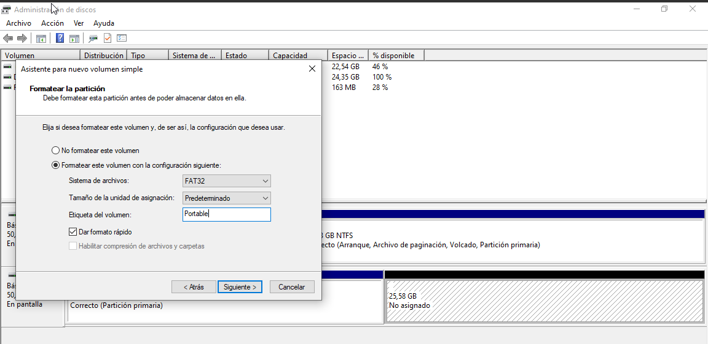
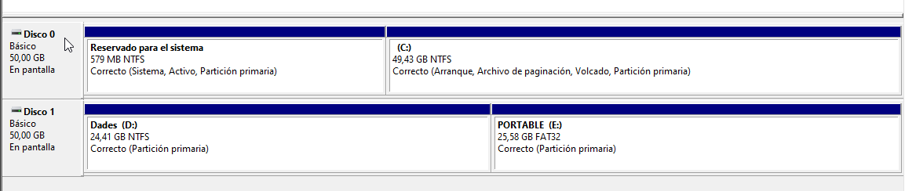
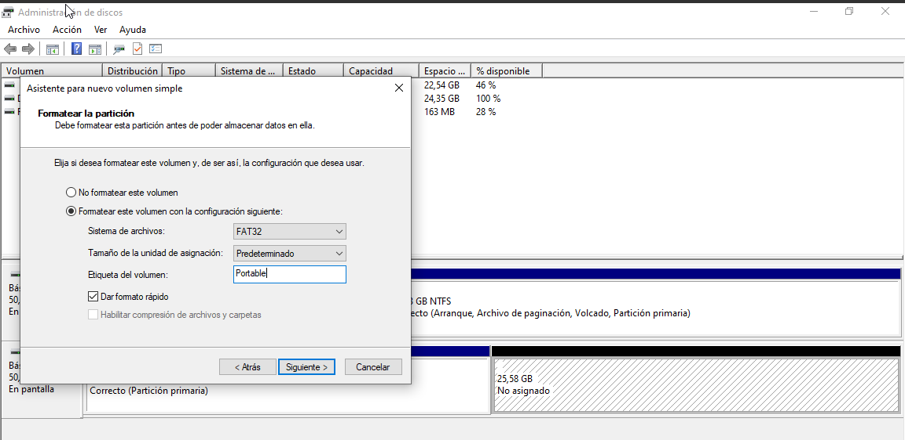
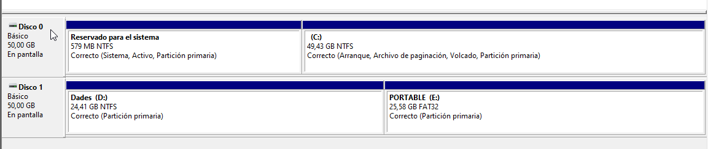
- Finalment, per comprovar si hem creat correctament aquestes particions des del terminal de comandes
CMD, executarem la comandadiskparti podrem llistar els discs i els volums per comprovar el seu format i mida.
- Quotes
Per continuar, anirem a l'explorador d'arxius i allà, amb el botó dret damunt del disc D que hem anomenat "Dades", obrirem les propietats i, a la pestanya "Quota", obrirem la configuració avançada.

- Seguidament, a la configuració habilitarem l'administració de quotes i limitarem l'espai del disc a 300 MB i un avís a 290 MB. També, si volguéssim, podríem denegar que l'usuari pogués superar aquest límit. I, per últim, activarem les opcions de registre. Un cop activada la configuració, ens sortirà la llum del semàfor en verd i un missatge del seu estat.


- Usuaris
A continuació, i després de configurar la quota, procedirem a la creació dels usuaris. Per a això, obrirem l'aplicació "cuentas de usuario" i, a les opcions avançades, configurarem la creació d'aquests.

- A més a més, veurem que se'ns obre l'aplicació
lusrmgr, on podem configurar els usuaris i grups del sistema local. Per tant, escollim la carpeta dels usuaris i, amb el botó dret, afegim un usuari nou. Com que volem crear dos alumnes, afegirem tant l'alumne 1 com el 2, tal com es mostra.
 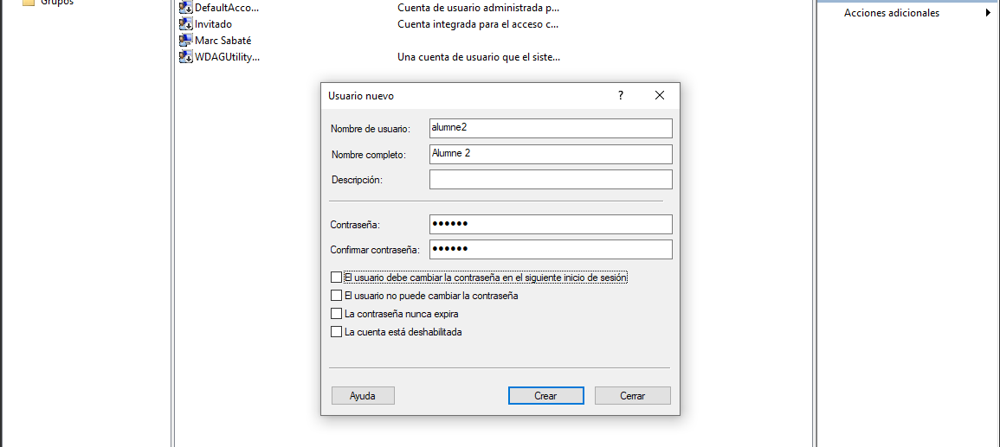
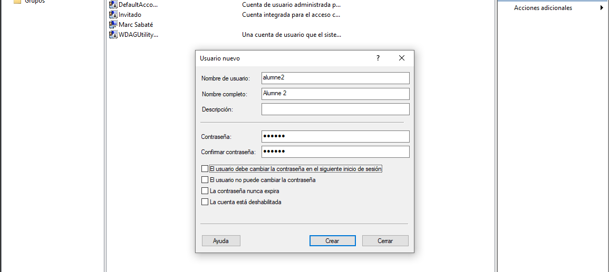
- Tant bon punt acabem la creació d'aquests usuaris, veurem que ja disposem d'ells per fer les proves.
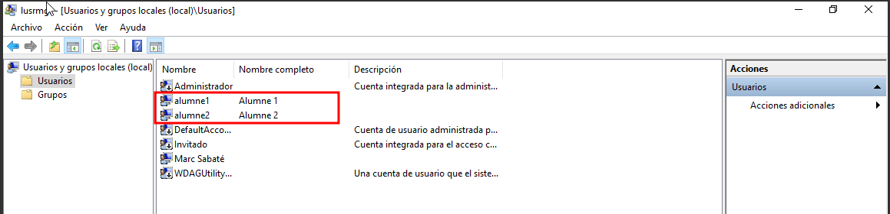
- Finalment, a la secció de grups, afegirem un grup nou tal com hem fet amb els usuaris i en crearem un que es digui "Limitats", que el formaran els dos alumnes creats anteriorment, afegint-los amb l'opció de "Agregar".


- Per acabar, comprovarem que puguem iniciar sessió amb els dos i que ens apareguin per poder fer-ho.
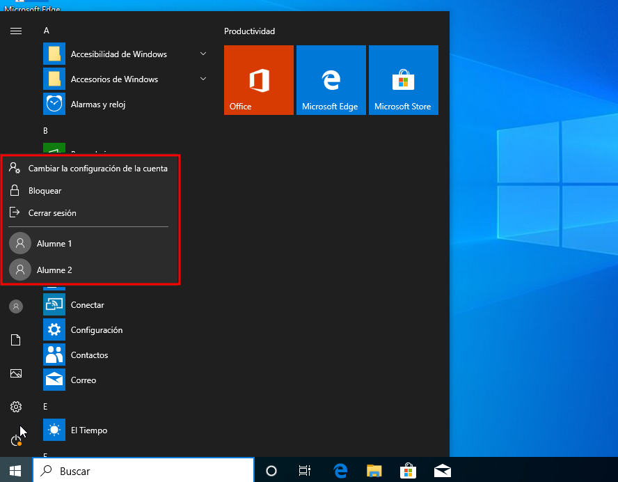

- Com a prova, amb l'alumne 1 excedirem la mida que poden utilitzar del disc D. L'avís que ens dona és que ha excedit el límit. Ens ha deixat sobrepassar-lo ja que així ho hem configurat.

Còpies de seguretat i automatització
Per poder fer les còpies de seguretat afegirem un disc nou d'uns 10GB tal i com hem fet abans. També, amb l'eina de Windows configurarem tot el disc amb el format NTFS i l'anomenarem "Backups".


- Seguidament, quan ja haguem formatat el disc, crearem una carpeta anomenada "CòpiesUsuaris"
(L'accent de la o pot portar a conflictes).
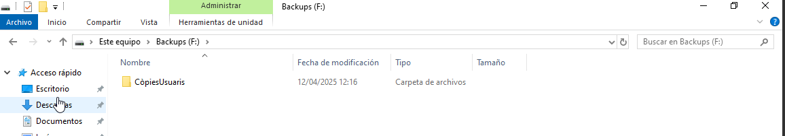
- A continuació, farem un script per crear una còpia de la carpeta de cada usuari dins de la nova que hem creat. Per fer un script ho podem fer obrint el bloc de notes i guardant el fitxer com un
.bat(IMPORTANT: Encara que el SO estigui amb qualsevol idioma la ruta del disc C ha de ser amb Users i no Usuarios).


- Per fer la prova executo l'script amb l'usuari administrador i com es pot veure la carpeta es crea correctament.
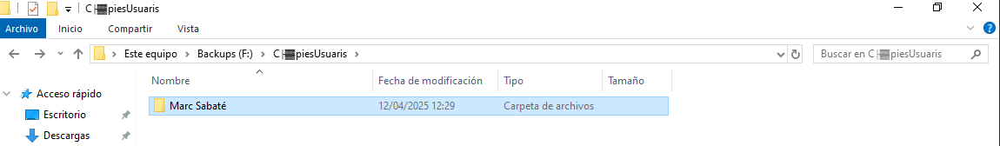
- Un cop tenim l'script fet volem que aquest s'executi cada cop que un usuari inici sessió per tant, afegirem l'script a l'aplicació "gpedit", a la qual podem accedir escrivint "gpedit" al cercador de Windows. Un cop allà buscarem la configuració de Windows d'usuaris i dins dels scripts escollirem els d'inici de sessió.
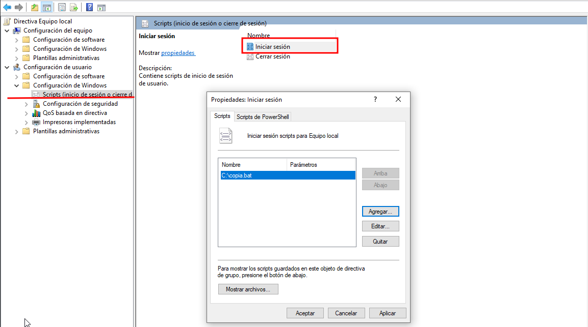
- Per comprovar el seu funcionament obrirem la sessió dels dos usuaris i comprovarem que si s'han realitzat les còpies a la carpeta.
(Al obrir la sessió veurem que s'obre un terminal, és normal ja que així es realitzen les còpies, quan acabi es tanca sol).


Gestió de processos
El més important amb la gestió de processos de Windows és l'eina tasklist que podem executar des del terminal de comandes (CMD). Aquesta comanda ens llistarà tots els processos que s'estan duent a terme al nostre dispositiu, amb el seu nom, identificador del procés, nom i número de sessió i l'ús de memòria de cadascun.

-
Si ens interessa podem deixar un registre del que s'està executant en aquell moment en un fitxer de text utilitzant la següent comanda.


-
Com podem veure dins d'aquests processos hi ha alguns que són prescindibles per l'usuari, com poden ser els d'aplicacions com Skype, One Drive i algunes més. Aquestes poden suposar un malbaratament de recursos del sistema si en disposem de pocs, així que el que farem serà eliminar aquests processos "inútils". Però primer veurem alguns d'aquests i la memòria que utilitzen.

-
Per matar els processos utilitzarem la comanda


-
Com es pot veure a la captura hi ha processos com el de Skype que també tenen un de background que també caldria "matar".
- Aquesta manera de matar els processos cada vegada que obrim sessió es pot fer tediosa, per tant, com hem fet abans afegirem això al nostre script d'inici de sessió perquè així cada cop que obrim sessió aquests processos prescindibles morin.
(En aquest cas he creat un script nou incloent les noves comandes)

- Per comprovar el seu funcionament obrirem sessió amb l'alumne 2 i buscarem el procés de One Drive per veure si s'elimina.


- I què passaria si matem un procés imprescindible? Doncs passaria el següent i per fer la prova matarem el procés
explorer.exe

- Aquest procés és el que ens permet navegar a través de l'explorador d'arxius, el que ens mostra l'escriptori i la barra de tasques i també fa de motor gràfic. Llavors matar aquest procés pot semblar la fi del nostre dispositiu. Però no hi ha problema amb la comanda
starti el nom del procés el podem tornar a executar. L'únic que haurem de fer és parar més compte amb quins processos matem.

Permisos
Si volem assignar permisos als usuaris que treballaran en certs entorns podem fer-ho de les següents maneres. En aquest cas el que farem serà al disc de "Dades" crear una carpeta anomenada "Projectes" on els usuaris alumne 1 i 2 treballaran.
- En primer lloc obrirem les propietats de la carpeta i a la pestanya de seguretat obrirem les opcions avançades.

- Després deshabilitarem l'herència i escollirem la primera opció. També a l'opció d'agregar posarem el següent, i esborrarem a tots els usuaris que no siguin l'administrador.
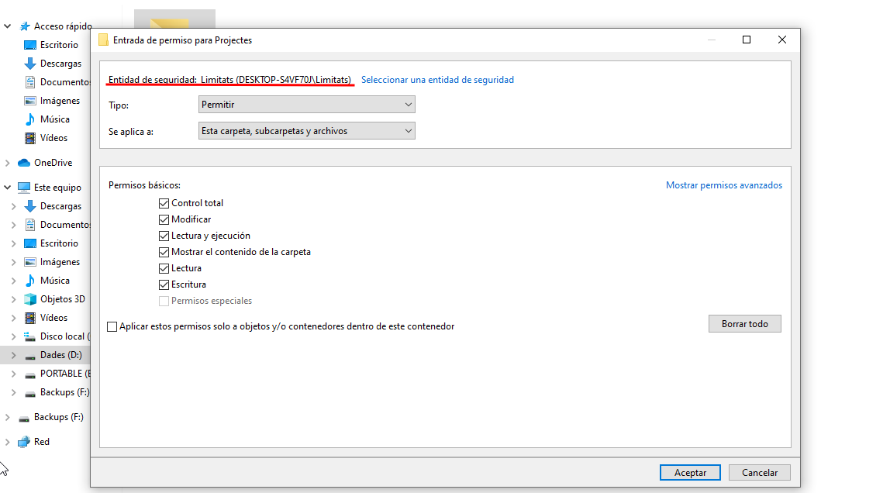
- El que estem fent és donar permisos màxims als usuaris del grup Limitats. El resultat hauria de ser semblant a aquest.

- Per fer proves entrarem amb l'alumne 1 a la carpeta i crearem un arxiu, l'editarem, l'esborrarem i veurem que podem fer el que vulguem ja que disposem de tots els permisos.
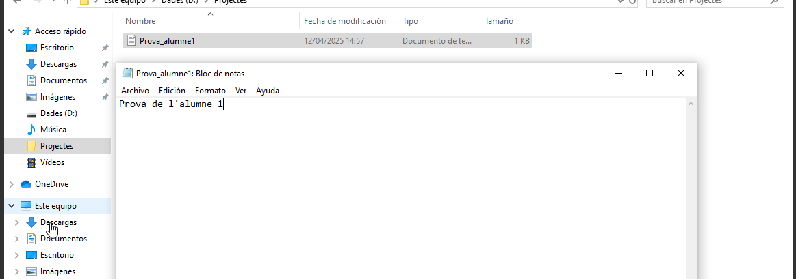
-
En el cas que vulguem fer alguna excepció, com en aquest cas que l'alumne 2 només pugui llegir, farem uns permisos especials amb la comanda.

-
Per comprovar que només tenim permisos de lectura intentarem crear algun objecte, modificar-lo i esborrar-lo, no podrem fer-ho de cap manera.


Annex
Tasklist de l'alumne 2
- Per demostrar el funcionament de l'script adjunto la tasklist després d'iniciar sessió amb l'alumne 2.
Nombre de imagen PID Nombre de sesi¢n N£m. de ses Uso de memor
================ ======== ================ ===============
System Idle Process 0 Services 0 8 KB
System 4 Services 0 144 KB
Registry 112 Services 0 69.048 KB
smss.exe 344 Services 0 1.080 KB
csrss.exe 444 Services 0 4.528 KB
wininit.exe 520 Services 0 6.160 KB
services.exe 664 Services 0 11.064 KB
lsass.exe 672 Services 0 22.440 KB
svchost.exe 800 Services 0 3.892 KB
svchost.exe 828 Services 0 41.548 KB
fontdrvhost.exe 844 Services 0 2.472 KB
svchost.exe 944 Services 0 17.732 KB
svchost.exe 992 Services 0 8.552 KB
svchost.exe 1060 Services 0 6.388 KB
svchost.exe 1140 Services 0 18.464 KB
svchost.exe 1148 Services 0 15.912 KB
svchost.exe 1156 Services 0 11.360 KB
svchost.exe 1164 Services 0 13.320 KB
svchost.exe 1176 Services 0 12.444 KB
svchost.exe 1324 Services 0 7.248 KB
svchost.exe 1372 Services 0 10.320 KB
svchost.exe 1384 Services 0 8.428 KB
svchost.exe 1504 Services 0 7.408 KB
svchost.exe 1616 Services 0 11.196 KB
svchost.exe 1708 Services 0 8.132 KB
svchost.exe 1724 Services 0 7.524 KB
svchost.exe 1744 Services 0 71.340 KB
svchost.exe 1768 Services 0 5.804 KB
Memory Compression 1852 Services 0 73.676 KB
svchost.exe 1924 Services 0 8.396 KB
svchost.exe 1984 Services 0 8.684 KB
svchost.exe 1992 Services 0 7.908 KB
svchost.exe 2012 Services 0 8.672 KB
svchost.exe 2080 Services 0 13.176 KB
svchost.exe 2092 Services 0 7.316 KB
svchost.exe 2180 Services 0 15.668 KB
svchost.exe 2264 Services 0 6.116 KB
svchost.exe 2276 Services 0 9.460 KB
svchost.exe 2368 Services 0 14.328 KB
svchost.exe 2432 Services 0 30.000 KB
spoolsv.exe 2564 Services 0 12.804 KB
svchost.exe 2612 Services 0 19.904 KB
svchost.exe 2640 Services 0 7.696 KB
svchost.exe 2692 Services 0 6.508 KB
svchost.exe 2780 Services 0 30.860 KB
svchost.exe 2792 Services 0 17.624 KB
svchost.exe 2804 Services 0 41.128 KB
svchost.exe 2812 Services 0 18.312 KB
svchost.exe 2888 Services 0 5.580 KB
wlms.exe 2920 Services 0 3.088 KB
svchost.exe 2928 Services 0 11.424 KB
svchost.exe 2952 Services 0 12.940 KB
svchost.exe 2984 Services 0 25.228 KB
svchost.exe 1456 Services 0 5.808 KB
svchost.exe 3900 Services 0 22.420 KB
svchost.exe 4012 Services 0 7.852 KB
svchost.exe 3388 Services 0 17.656 KB
svchost.exe 6952 Services 0 12.796 KB
SearchIndexer.exe 7140 Services 0 34.064 KB
svchost.exe 6484 Services 0 7.164 KB
svchost.exe 7372 Services 0 13.228 KB
SecurityHealthService.exe 7704 Services 0 15.304 KB
svchost.exe 7984 Services 0 7.224 KB
svchost.exe 4292 Services 0 6.268 KB
svchost.exe 4372 Services 0 9.372 KB
svchost.exe 4288 Services 0 10.768 KB
svchost.exe 2256 Services 0 13.484 KB
svchost.exe 5872 Services 0 9.036 KB
svchost.exe 820 Services 0 19.416 KB
SgrmBroker.exe 5856 Services 0 5.576 KB
svchost.exe 5572 Services 0 16.548 KB
svchost.exe 7224 Services 0 8.736 KB
svchost.exe 7852 Services 0 7.868 KB
svchost.exe 2312 Services 0 29.980 KB
svchost.exe 2028 Services 0 17.060 KB
MsMpEng.exe 4912 Services 0 255.024 KB
MpDefenderCoreService.exe 6760 Services 0 18.624 KB
dllhost.exe 3104 Services 0 10.692 KB
NisSrv.exe 5712 Services 0 10.164 KB
WUDFHost.exe 5764 Services 0 7.904 KB
svchost.exe 7060 Services 0 9.816 KB
svchost.exe 4684 Services 0 9.184 KB
svchost.exe 8516 Services 0 22.368 KB
svchost.exe 10316 Services 0 19.804 KB
svchost.exe 5144 Services 0 6.908 KB
svchost.exe 2040 Services 0 10.264 KB
csrss.exe 8120 Console 10 4.920 KB
winlogon.exe 11924 Console 10 9.448 KB
fontdrvhost.exe 2288 Console 10 4.056 KB
dwm.exe 3120 Console 10 68.736 KB
sihost.exe 7116 Console 10 24.544 KB
svchost.exe 6244 Console 10 18.048 KB
svchost.exe 11900 Console 10 35.036 KB
taskhostw.exe 128 Console 10 14.360 KB
explorer.exe 8440 Console 10 115.732 KB
svchost.exe 5348 Console 10 17.208 KB
StartMenuExperienceHost.e 10472 Console 10 55.000 KB
RuntimeBroker.exe 3948 Console 10 21.368 KB
RuntimeBroker.exe 1644 Console 10 34.036 KB
ApplicationFrameHost.exe 9884 Console 10 25.104 KB
MicrosoftEdge.exe 9804 Console 10 61.080 KB
browser_broker.exe 10988 Console 10 8.148 KB
Windows.WARP.JITService.e 10196 Services 0 5.320 KB
RuntimeBroker.exe 1220 Console 10 7.508 KB
MicrosoftEdgeCP.exe 9100 Console 10 26.308 KB
MicrosoftEdgeSH.exe 768 Console 10 13.420 KB
ctfmon.exe 9372 Console 10 14.376 KB
RuntimeBroker.exe 2684 Console 10 12.656 KB
smartscreen.exe 9572 Console 10 22.936 KB
SecurityHealthSystray.exe 4112 Console 10 8.440 KB
dllhost.exe 2704 Console 10 12.552 KB
MusNotifyIcon.exe 5728 Console 10 13.604 KB
ShellExperienceHost.exe 9536 Console 10 58.496 KB
RuntimeBroker.exe 10364 Console 10 21.504 KB
SystemSettingsBroker.exe 3536 Console 10 22.940 KB
svchost.exe 7388 Services 0 8.240 KB
svchost.exe 11952 Services 0 6.604 KB
svchost.exe 9828 Services 0 11.824 KB
cmd.exe 7968 Console 10 4.036 KB
conhost.exe 9908 Console 10 23.284 KB
RuntimeBroker.exe 6440 Console 10 24.216 KB
svchost.exe 5552 Services 0 7.108 KB
svchost.exe 2688 Console 10 11.760 KB
tasklist.exe 11316 Console 10 8.384 KB
WmiPrvSE.exe 4180 Services 0 8.440 KB